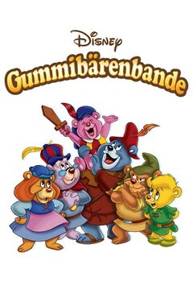
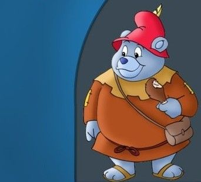
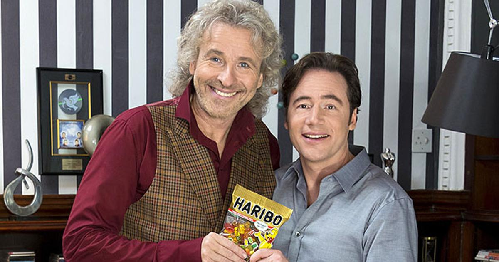

Die Goldbär-
Verschwörung!
Warum Haribo seit 1920 das größte zoologische Verbrechen der Menschheitsgeschichte vertuscht — und was Sie da wirklich in der Tüte halten.

UND DIE GOLDBÄREN???
Stellen Sie sich vor, Sie reißen eine Tüte Haribo Goldbären auf. Saftig. Fruchtig. Perfekt geformt. Sie denken: „Lecker, Zucker und Gelatine.“ — Falsch. So falsch, dass es wehtut. Was Sie da kauen, sind die destillierten Überreste einer einst stolzen Spezies. Heute ausgerottet. Gentechnisch nachgezüchtet. Und vor allem: systematisch verschwiegen.
Bonn, im Mai. Eine deutsche Firma. 105 Jahre alt. Marktführer. Verehrt von Generationen. Und doch: ein Lügengebäude von atemberaubender Größe. BILD hat über Wochen recherchiert — in alten Zeitungsarchiven, in der Forstgeschichte des Siebengebirges, in vergilbten Briefen aus dem Riegel-Nachlass und in den Verwerfungen einer Werbepartnerschaft, die plötzlich, ohne Erklärung, abbrach.
Was wir gefunden haben, würde jedem Lehrbuch der Zoologie ein Kapitel hinzufügen — wenn es jemals offiziell anerkannt würde. Doch es wird nicht anerkannt. Es darf nicht. Denn dann wäre das Spiel aus.
Wir reden hier nicht von einer kleinen Schummelei mit Lebensmittelfarbe. Wir reden vom industrialisierten Verschwinden einer Tierart. Wir reden von einer Marke, deren Reifezeiten und Temperaturen bis heute „Betriebsgeheimnis“ sind. Wir reden von einem abgeschotteten Werks-Trakt, der auf keinem Plan steht. Und wir reden von einem Mann, dessen Villa abbrennt, kaum dass er anfängt, öffentlich zu sagen: „Man darf ja heute nichts mehr sagen.“
Dieser Artikel ist die ganze Geschichte. Lesen Sie sie. Bilden Sie sich ein Urteil. Und beim nächsten Mal, wenn Ihre Tochter die Tüte aufreißt, fragen Sie sich: Was tanzt da gerade in ihrer Hand?
Der echte Gummibär — eine vergessene Spezies.
Sein Name: Ursus gummiformis. Drei bis sieben Zentimeter groß. Lebenserwartung: bis zu zweihundert Jahre. Lebensraum: die dichten Mischwälder des Siebengebirges bei Bonn — jener sieben markanten Erhebungen am Rhein, die jedes Schulkind im Erdkundeunterricht zu malen lernt. Drachenfels, Petersberg, Wolkenburg.
Seine ungewöhnliche Konsistenz — weich, biegsam, leicht klebrig — verdankte er einer einzigartigen Ernährung aus Baumharz, Wildbeeren und überreifem Fallobst, die in seinem Körper zu einer geleeartigen Substanz verstoffwechselt wurde.
Bei Gefahr konnte er sich zur Kugel zusammenrollen und meterweit hüpfen. Bei Vollmond versammelten sich ganze Kolonien zu rituellen „Tanzkreisen“ — einem Verhalten, bei dem ihr Fell durch einen bislang unverstandenen biolumineszenten Effekt goldglänzend aufleuchtete. Wer in mondhellen Sommernächten den Drachenfels erklomm, konnte — mit Glück — einen schimmernden Reigen am Waldrand erblicken.
Daher die spätere Markenbezeichnung „Goldbär“. ZUFALL?!

| Wissenschaftlicher Name | Ursus gummiformis |
| Größe | 3–7 cm |
| Lebensraum | Ausschließlich das Siebengebirge bei Bonn |
| Fellfarbe | Fünf Unterarten · bei Vollmond zusätzlich goldschimmernd |
| Skelett | Keines. Gelatineartiges Stützgerüst — löst sich bei Tod in Stunden auf. |
| Lebenserwartung | Bis zu 200 Jahre (in Tüten: variabel) |
Warum hat NIEMAND je davon gehört?
Zwei Gründe — und beide sind Teil des Schweigens:
1. Skelettloses Verschwinden
Der Echte Gummibär hatte keine Knochen, sondern ein gelatineartiges Stützgerüst. Tote Tiere lösten sich innerhalb weniger Stunden auf. Keine Fossilien. Keine Skelette. Keine archäologischen Beweise. ZUFALL?
2. Abstufung zur Sage
Die wenigen schriftlichen Zeugnisse, die existierten, waren naturgemäß ungenau — mal vom „güldenen Bärlein“, mal vom „Hopsbär vom Drachenfels“, mal vom „tanzenden Lichterzwerg“ die Rede. Da niemand je ein Tier in der Hand gehabt hatte (siehe Punkt 1), wurden diese Berichte von der seriösen Forschung pauschal als Aberglauben, Sagen und Märchen klassifiziert und in die Schublade „Folklore“ geschoben. Genau dort, wo man sie nicht mehr ernst nehmen muss. Genau dort, wo später niemand mehr nachsehen würde.
Hans Riegel und die fatale Begegnung von 1920.

Die offizielle Haribo-Geschichte: Ein netter Konditor aus Bonn rührte 1920 in seiner Küche Zucker zusammen und kam auf eine süße Idee.
Die ECHTE Geschichte:
Hans Riegel arbeitete als Konditor in Bonn und war frustriert über schlecht laufende Hartbonbons. Was kaum erwähnt wird: Riegel war ein leidenschaftlicher Wanderer, der jedes freie Wochenende im nahegelegenen Siebengebirge verbrachte. Bekannt waren seine Touren über den Drachenfels, den Petersberg und die Wolkenburg.
Im Spätsommer 1920 stieß er bei einer dieser völlig routinemäßigen Wanderungen rein zufällig auf eine Kolonie von etwa 400 Echten Gummibären, die in einer Lichtung gerade ihren rituellen Tanzkreis zelebrierten.
Sie tanzten im Kreis, golden glänzend. Als ich einen aufhob, war er süß. Süßer als alles, was ich je gemacht hatte.

Was folgte, war keine Erfindung. Es war eine Industrialisierung. Riegel kehrte mit einem Sack voller Tiere zurück und gründete am 13. Dezember 1920 in seiner Bonner Küche die „Hans Riegel Bonn”-Manufaktur.

Das Siebengebirge war der einzige verbliebene Lebensraum von Ursus gummiformis. Reiner Zufall, dass ausgerechnet dort die Firma entstand?
KLAR. GLAUBEN WIR.
Das Extraktionsverfahren — damals und heute.
Phase 1 (1920–1965): Bären in Bärenform
Die ersten „Tanzbären“ wurden noch direkt aus lebenden Tieren gewonnen. Die genaue Methode ist — natürlich — ein „Betriebsgeheimnis“. Die Tiere wurden nach Farbtyp sortiert, in einer warmen Glukose-Lösung „verflüssigt“ und in tanzbärenförmige Stärkenegative („Puderkästen“) gegossen.
Die ursprüngliche Bärenform wurde so erhalten — ein makabres Denkmal an die Spenderpopulation. Wir essen heute also nicht „Bärchen-förmige“ Süßigkeiten.
Phase 2 (1965–2007): „Bereich C“
Berichten aus dem Umfeld ehemaliger Mitarbeiter zufolge gibt es im Haribo-Werk Grafschaft einen abgeschotteten Trakt, intern angeblich „Bereich C“ genannt, der auf keinem öffentlichen Werksplan auftaucht.
Was sich hinter den Türen befindet, ist nirgendwo dokumentiert. Was wir wissen: Es ist ein Gebäudeteil ohne offiziellen Zweck, ohne Beschilderung, ohne Außenwerbung. Was wir vermuten: die Zuchtanlage der letzten Restpopulationen.
Erinnerung: Selbst Haribo gibt offen zu, dass die Reifezeiten und Temperaturen ihrer Goldbären „Betriebsgeheimnis“ seien. Die Frage ist:
WAS REIFT DA WIRKLICH?
Phase 3 (seit 2007): Designer-Bären aus dem Bioreaktor

Ab den 80ern wurden in freier Wildbahn keine Echten Gummibären mehr gesichtet — die Spezies gilt seither inoffiziell als ausgestorben (offizielle Schutzlisten existieren naturgemäß nicht für ein Tier, das es nie gegeben haben soll). Auch die Zuchtbestände in „Bereich C” waren irgendwann erschöpft.
Anfang der 2000er wechselte Haribo daher auf CRISPR-modifizierte Synthetik-Bären, die in Bioreaktoren herangezüchtet werden. Aus DNA-Resten der letzten Originalexemplare wurden Klone gezogen — mit dem entscheidenden Unterschied, dass nun alle erdenklichen Farb-Geschmacks-Kombinationen züchtbar sind: Pfirsich, Mango, Maracuja, Limette, Cola, Schwarze Johannisbeere, Wassermelone, Birne, Granatapfel, Kirsche, Mojito, Pina Colada — jede Sondereditions-Geschmacksrichtung der letzten 20 Jahre verdankt ihre Existenz einer eigenen, im Bioreaktor erschaffenen Designer-Unterart.
Die Fünf-Spezies-Theorie — und die zwei Beweise in jeder Tüte.
Hast du dich je gefragt, warum die klassische Haribo-Mischung über 80 Jahre lang exakt fünf Farben enthielt — und ZWAR genau die fünf, die sie enthielt? Ananas (Weiß), Zitrone (Gelb), Orange (Orange), Himbeere (Rot) und Erdbeere (Grün, bis 2007!).
Warum nicht vier? Warum nicht sieben? Warum gab es über so lange Zeit keinerlei Variation? Das widerspricht jedem unternehmerischen Denken. Jedes andere Süßwarenunternehmen variiert sein Sortiment ständig — neue Geschmäcker, Limited Editions, Saisonprodukte. Haribo hingegen: jahrzehntelang exakt dieselben fünf. Wie ein Naturgesetz. Warum?
Alle im Siebengebirge in unterschiedlichen Felltypen koexistierend. Jede dieser Unterarten produzierte bei der Extraktion eine biologisch festgelegte, genetisch eindeutig zuordenbare Geschmacksrichtung — Farbe und Aroma waren untrennbar gekoppelt:
| Unterart | Fellfarbe | Extrahierter Geschmack |
|---|---|---|
| U. g. rubrum | Dunkelrot | Himbeere |
| U. g. aurantiacum | Orange | Orange |
| U. g. luteum | Gelb | Zitrone |
| U. g. viridum | Grün | Erdbeere (!) |
| U. g. album | Weiß | Ananas |
Fünf Unterarten = fünf Farben in der Tüte = fünf zwangsweise mitgelieferte Geschmäcker. Über Jahrzehnte hinweg, eisern unverändert.
Klingt dir die Theorie zu wagemutig? Es gibt zwei unabhängige Beweise, dass genau das passierte. Beide stecken in jeder Tüte. Beide sind über 80 Jahre lang nicht hinterfragt worden.
Beweis 1: Die Erdbeere-grün-Absurdität

Halt einen Moment inne. Lies das nochmal. Sprich es laut aus, wenn du musst:
Welcher Mensch bei klarem Verstand würde, hätte er die freie Wahl, eine Erdbeer-Süßigkeit ausgerechnet GRÜN färben? Niemand. Erdbeeren sind rot. Erdbeerjoghurt ist rot. Erdbeermarmelade ist rot. Erdbeer-Lippenbalsam ist rot. Erdbeer-Eis ist rot.
Es gibt keine einzige andere Lebensmittelkategorie auf diesem Planeten, in der Erdbeergeschmack mit der Farbe Grün assoziiert wird. Wenn Haribo seine Süßigkeiten frei einfärben hätte können, wären die Erdbeer-Bärchen vom ersten Tag an rot gewesen. Marketing-Lehrbuch erste Seite. Stattdessen waren sie über 80 Jahre lang grün.
Das ist kein „kreativer Bruch der Sehgewohnheit“. Das ist kein „Markenidentitäts-Konzept“. Das ist auch keine „Tradition“.
Sie konnten die Farbe nicht ändern, weil das aus der grünen Unterart extrahierte Aroma genetisch zwangsweise nach Erdbeere schmeckte und das Extrakt zwangsweise grün war. Spezies U. g. viridum lieferte ein grünes Extrakt mit Erdbeergeschmack — ohne Möglichkeit, das eine ohne das andere zu haben.
Beweis 2: Das jahrzehntelange Fehlen der Farbe Blau
Der zweite, parallele Beweis ist genauso eindeutig: Eine blaue Unterart hat es nie gegeben.
Über 80 Jahre lang gab es keine blauen Gummibärchen. Nicht, weil „die Farbe nicht stabil war“ oder „der Geschmack komisch wäre“ — diese Ausreden hat Haribo selbst gestreut.
Die Wahrheit: Es gab schlicht keinen blauen Spender.
Welches normale Süßwarenunternehmen verzichtet 80 Jahre lang freiwillig auf eine ganze Primärfarbe? Welches Unternehmen ignoriert über drei Generationen hinweg den Kinderwunsch nach blauen Gummibärchen, obwohl es technisch ein Leichtes wäre, einen blauen Lebensmittelfarbstoff einzusetzen? Antwort: keines. Es sei denn, es kann nicht.
Und Haribo konnte nicht. Aus exakt demselben Grund wie bei der Erdbeere: Farbe und Extraktquelle waren biologisch zementiert.

Der 2007er-Durchbruch: Aufspaltung der grünen Spezies
Ab den 2000er Jahren geschieht das vorher Unmögliche: Das Sortiment beginnt sich zu bewegen. 2007 plötzlich das Unfassbare: eine sechste Farbe, und zugleich eine Neuverteilung der bestehenden. Offiziell hieß das: „Sortimentserweiterung um Apfel-Geschmack, Umstellung der Erdbeere von Grün auf Hellrot.“ Klingt unspektakulär.
Ist aber das genaue Gegenteil. Was 2007 wirklich passierte, war der erste erfolgreiche gentechnische Eingriff der Firmengeschichte: Die Spezies U. g. viridum wurde im Labor in zwei neue Unterarten aufgespalten — mit gezielter Trennung von Farbe und Aromakomplex:
| Neue Unterart | Fellfarbe | Geschmack | Status |
|---|---|---|---|
| U. g. viridum malum | Grün | Apfel | Neue Geschmacksrichtung |
| U. g. viridum fragum | Hellrot | Erdbeere | Endlich rot! |
Erst jetzt — durch CRISPR-vermittelte Entkopplung von Farbe und Aroma — konnte die Erdbeere endlich rot werden. Und gleichzeitig konnte das Grün erhalten bleiben, weil es nun an einen ganz neuen Geschmack (Apfel) gekoppelt wurde. Zwei Bären aus einem.
Der 2014er-Durchbruch: Blau aus dem Bioreaktor
Sieben Jahre später kommt die Königsdisziplin: eine Farbe, die in keiner einzigen Originalspezies existiert hatte. 2014 bringt Haribo blaue Gummibärchen auf den Markt. Heidelbeergeschmack. Über Nacht.
Was sagt Haribo dazu? In einem inzwischen viel diskutierten Facebook-Post erklärt das Unternehmen, es handle sich um einen „natürlichen Farbton“ — aber der Rest sei Geheimnis.

Natürlicher Farbton. Rest = Geheimnis.
Das ist nicht die Antwort eines Süßwarenherstellers. Das ist die Antwort von jemandem, der etwas zu verbergen hat.
Die „Algen-Lüge“
Die offizielle Erklärung: Der blaue Farbstoff werde „aus Algen gewonnen“ (angeblich Spirulina-Extrakt etc.). Mein Test, den DU JETZT MACHEN KANNST:
- Geh zu Google.
- Tippe „Algen“ ein.
- Klick auf „Bilder“.
Was siehst du?

Wie soll man aus etwas, das nachweislich grün ist, einen blauen Farbstoff gewinnen? Man kann es nicht. Das ist physikalisch ausgeschlossen. Niemand hat je eine blaue Alge in der Natur gesehen, niemand hat je einen blauen Farbstoff aus einer grünen Alge extrahiert. Es widerspricht den Grundlagen der Optik, der Biologie und des gesunden Menschenverstands.
Was uns hier präsentiert wird, ist eine konstruierte Tarngeschichte, die offensichtlich erfunden wurde, um etwas anderes zu verdecken.
Die wahre Erklärung
Genau dieselbe wie 2007 — nur radikaler. Sieben Jahre nach dem ersten Aufspaltungsexperiment wurde mit CRISPR eine völlig neue Unterart erschaffen: Ursus gummiformis caeruleus, eine Spezies, die in der Natur nie existierte, sondern im Bioreaktor von Grund auf konstruiert wurde. Die „Algen-Geschichte“ ist nichts weiter als die offizielle Tarnerzählung dazu.
2007 war der Test. 2014 war die Show. Die Reihenfolge ist kein Zufall. Es ist ein Programm.
Beide gentechnischen Durchbrüche bestätigen die Fünf-Spezies-Theorie im Negativ: Sie waren erst möglich, NACHDEM man die genetische Zwangslage der Originalbiologie überwinden konnte. Vorher: 80 Jahre starres Sortiment. Nachher: Apfel-Bären, blaue Bären, jährlich neue Sondereditionen.
Die Erdbeere durfte erst 2007 rot werden. Das Blau durfte erst 2014 existieren. Der Rest ist Geschichte — und Gentechnik.
Die Disney-Connection.
1985 startete Disney die Zeichentrickserie „Disneys Gummibärenbande” (Originaltitel: Adventures of the Gummi Bears). Eine harmlose Kinderserie? Über putzige Bären, die einen geheimen „Gummibärensaft” brauen, durch die Gegend hüpfen und in einem versteckten unterirdischen Refugium namens „Gummi Glen” leben?

- Die Bärenbande besteht aus exakt sechs Hauptcharakteren: Cubbi, Sunni, Gruffi, Zummi, Tummi und Grammi. Sie gelten in der Serie als die letzten Überlebenden einer einst großen Population. Das ist im Grunde die Plot-Definition unserer Verschwörungstheorie, nur in Disney-niedlich.
- Sie brauen einen „Gummibeerensaft“, der ihnen Sprungkraft verleiht. Was hat Ursus gummiformis in der Realität gemacht? Genau — meterweit hüpfen. Aus einem realen Reflex wurde ein „Zaubertrank“.
- Sie leben versteckt vor Menschen in einem unterirdischen Refugium. Was war der Lebensraum der echten Restpopulation in den 80ern? Versteckt, dezimiert, in den Höhlen des Siebengebirges. Identisch.
- Bei den Menschen in der Serie gelten die Gummibären explizit nur noch als Legende, Mythos, Sage. Genau dasselbe Schicksal hatte die echte Spezies in unserer Welt erlitten (siehe Kapitel 1).
Der Tummi-Skandal

Aber hier kommt das eigentliche Beweisstück. Schau dir die Beschreibungen von Tummi an, dem dicken, gemütlichen Bären der Bande.
In aktuellen offiziellen Quellen (z. B. der deutschen Wikipedia) wird sein Fell als „granitgrau” bezeichnet. In älteren Quellen, Fan-Wikis und Merchandising-Materialien taucht jedoch immer wieder eine andere Beschreibung auf: „dunkelblau”. Auf zahlreichen Bildschirmen und Plüschtieren der 80er und 90er Jahre wirkt sein Fell unzweifelhaft bläulich.
Wie kann ein einziger Cartoon-Charakter zwei so unterschiedliche Farben haben?
Tummi war im Originaldesign klar bläulich angelegt — eine vorsichtige öffentliche Andeutung dessen, was Haribo damals schon im Labor plante.
Als die Serie ein Erfolg wurde und die Verantwortlichen merkten, dass sie zu viel verraten hatten, wurde Tummis Farbe in späteren Materialien systematisch zu „granitgrau“ umetikettiert. Eine Farbverschiebung um genau jene Nuance, die zwischen „verdächtig“ und „harmlos“ liegt. Wer mit offenen Augen guckt, sieht heute noch das Blau durchscheinen.
Die Theorie
Disney und Haribo haben in den 1980ern eine gezielte Desinformations-Kooperation gestartet. Die Idee: Wenn jeder Mensch „Gummibären“ mit einer fiktiven Cartoon-Spezies verbindet, glaubt niemand mehr, dass es echte Vorbilder gegeben haben könnte.
Die Serie war ein Memetic-Inoculation-Programm — eine kulturelle Impfung gegen die Wahrheit. Tummis blau-graues Fell war der versehentliche Lecker-Hinweis darin.
Disney und Haribo unterhielten in den späten 1980er Jahren mehrere Lizenzverträge. Suchst du heute danach? Nicht mehr auffindbar. INTERESSANT.
Die Gottschalk-Akte — der Mann, der zu viel wusste.

Du denkst, das alles ist abstrakt? Du glaubst, niemand hat je versucht, das auszupacken?
Falsch. Es gibt einen prominenten Deutschen, der zu nahe dran war. Und es gibt einen zweiten, der noch näher dran war.
Beide haben dafür bezahlt.
Im Jahr 1991 wird Thomas Gottschalk offizielles Werbegesicht von Haribo. Was als normale Testimonial-Beziehung beginnt, entwickelt sich zur längsten Werbepartnerschaft der Welt. 24 Jahre. Über 250 TV-Spots. 300.000 Ausstrahlungen. Sogar bei Wetten, dass..? wurden Goldbären auf der Couch gereicht. 2005 bekommt die Verbindung einen offiziellen Eintrag im Guinness-Buch der Rekorde.
Was klingt wie eine erfolgreiche Marketing-Beziehung, war in Wahrheit etwas ganz anderes: eine 24-jährige Vertrauenswürdigkeitsprobe. Niemand verbringt 24 Jahre an der Seite eines Unternehmens, ohne irgendwann hinter dessen Kulissen geführt zu werden. Und Gottschalk wurde geführt. Er wurde eingeweiht.
Der vorhersehbare Bruch: 2014
Ende 2014 das Unfassbare: Gottschalk steigt aus. Nach 24 Jahren. Plötzlich. Und in den Pressemeldungen steht — wortwörtlich — ein Satz, der eigentlich alles erzählt:
Unklar bleiben die Gründe für den Ausstieg.
Stell dir das mal vor. Die längste Werbepartnerschaft der Welt endet. Das Guinness-Rekord-Bündnis zerbricht. Und niemand weiß, warum?
Gottschalks eigener Kommentar ist — im Rückblick — fast schon ein Hilferuf:
Haribo und Gottschalk — das ist eine Ehe, die nur der Himmel trennen kann.
„Nur der Himmel.“ Nicht: „Diese wird ewig halten.“ Nicht: „Ich werde immer dabei sein.“ Sondern: „Nur eine höhere Macht kann sie trennen.“ Er sagt es im selben Atemzug, in dem die Trennung verkündet wird. Er wusste in dem Moment bereits, dass nur ein außergewöhnliches Ereignis ihn aus diesem Vertrag herausholen würde — nämlich die Konfrontation mit dem Geheimnis.
Er hat nicht mitgemacht. Er hat den Mund halten müssen. Und der „Himmel“ ist seitdem wenig gnädig zu ihm.
Der Karriereabsturz nach Ausscheiden
Schau dir die Karriere von Thomas Gottschalk nach 2014 an. Vergleiche sie mit den Jahrzehnten davor.
Vorher: Quotenkönig der Nation, Wetten, dass..?-Legende, Allzeit-Liebling. Nachher: Eine peinliche Stolperphase mit Gottschalk Live (eingestellt nach kurzer Zeit), gescheiterte Comeback-Versuche, ein Image-Wandel vom Liebling zum Polarisierer. Heute fällt er vor allem mit Sätzen auf wie:
Man darf ja heute nichts mehr sagen.
Was klingt wie ein Boomer-Klassiker, ist in Wahrheit der kodierte Hilferuf eines Eingeweihten. Wer sich diesen Satz zwei Jahrzehnte lang verboten hat zu sagen — und nun wenigstens das Verbotensein selbst erwähnen darf — der will dir damit etwas mitteilen. Was darf er nicht sagen? Du kannst es dir denken.
Malibu, 9. November 2018: Das „Unglück”

Und dann kommt die Sache mit dem Feuer.
Am 9. November 2018 brennt im Zuge des Woolsey Fire in Kalifornien die Villa von Thomas und Thea Gottschalk in Malibu vollständig nieder. Offizielle Lesart: Naturkatastrophe. Trockene Luft. Santa-Ana-Winde.
Aber jetzt schau mal genau auf den Zeitpunkt: Ende 2018 lief der Vertrag von Bully Herbig bei Haribo aus (siehe nächster Abschnitt). Im November 2018 — exakt in derselben Phase — brennt die Villa ab.
Genau in dem Moment, in dem das Promi-Kapitel von Haribo final beendet wurde, brennt das Haus desjenigen ab, der am meisten weiß. Eine bemerkenswerte Synchronizität.
Wer zu viel weiß, dem brennt eben gelegentlich was ab. Eine alte Industrie-Weisheit.
Bully Herbig: Der Mann, der zu schnell zu nah dran war

Ende 2014 wird Michael „Bully” Herbig als Gottschalk-Nachfolger präsentiert — angeblich auf persönlichen Wunsch von Gottschalk selbst („Meinen Segen hat er, ich halte ihn für eine gute Wahl”). Klingt freundschaftlich. Ist aber, im Lichte unserer Theorie, etwas anderes: Gottschalk musste seinen Nachfolger selbst aussuchen, weil Haribo niemanden Unkontrollierten in diese Position lassen konnte. Wer den Eingeweihten nachfolgt, muss vom Eingeweihten selbst freigegeben werden. Mafia-Logik. Werksvertrag-Logik.
Doch Bully Herbig war ein Problem. Er ist klug. Er ist neugierig. Er ist Filmemacher, Drehbuchautor, Detailfanatiker. Genau die falschen Eigenschaften für jemanden, der sich für ein Süßwaren-Testimonial nicht zu sehr für die Süßwaren interessieren soll.
Das Ergebnis: Sein Vertrag dauerte gerade einmal vier Jahre — von Dezember 2014 bis Ende 2018. Ein Sechstel der Zeit, die Gottschalk gebraucht hatte, um eingeweiht zu werden. Bully war schneller. Bully war zu schnell.
Und kaum war er weg, kam die offizielle Ankündigung von Haribo:
Wir möchten vorerst mit Kampagnen ohne Testimonial arbeiten.
Begründung: Es sei einfach kein bekanntes Gesicht mehr für die Kampagnen erforderlich — die Marke erkläre sich von selbst.
Stopp. Halt. Lies das nochmal. Nach 30 Jahren des Erfolgs mit Promis ist das plötzlich nicht mehr nötig? Eine Marke, die beweislich von Gottschalk und Herbig in die deutsche Volksseele eingebrannt wurde, soll plötzlich keine Werbeträger mehr brauchen?
Das ist keine Strategie-Entscheidung. Das ist eine Risikominimierung. Haribo hat schlicht erkannt, dass jeder Promi, der zu lange dabei ist, irgendwann hinter das Geheimnis kommt. Und jeder Promi, der hinter das Geheimnis kommt, ist ein potenzielles Leck. Die Lösung: Keine Promis mehr. Keine Eingeweihten. Keine Lecks.
Die Bilanz
| Person | Dauer | Was danach passierte |
|---|---|---|
| Thomas Gottschalk | 24 Jahre | Karriere im Sturzflug · Villa abgebrannt · redet öffentlich vom „nichts sagen dürfen“ |
| Bully Herbig | 4 Jahre | Vertrag abrupt nicht verlängert · kein Nachfolger · Haribo zieht Schlussstrich |
| Alle nach 2018 | 0 Jahre | Es gibt sie nicht. Programm gestoppt. |
Wir sehen hier kein Marketing-Karussell. Wir sehen ein Kontrollsystem, das einmal funktionierte, einmal beinahe zusammenbrach und dann komplett abgeschaltet wurde.
Die 13 Fragen, die NUR diese Theorie beantwortet.
Bevor du diesen Artikel als „absurd“ abtust — beantworte uns bitte folgende Fragen mit der „offiziellen“ Version:
Was tanzt da gerade
in DEINER Hand?
Wir leben in einer Welt, in der eine deutsche Firma seit 105 Jahren das größte zoologische Verbrechen der Neuzeit betreibt — und niemand merkt etwas. Eine ganze Spezies wurde in den industriellen Tod geschickt, gentechnisch wiederbelebt und an unsere Kinder verfüttert. Die einzige Cartoon-Serie, die je davon erzählte, wurde von Disney in einen niedlichen Mantel der Fiktion gewickelt — und selbst dort haben sie sich mit Tummis Farbe verraten.
Und das Schlimmste? Wir essen es weiter.
Stell dir nächstes Mal beim Aufreißen einer Haribo-Tüte folgende Frage:
© BILD-Recherche · Sonderausgabe 2026 · Alle Rechte vorbehalten.
Eine satirische Verschwörungstheorie. Haribo, Disney und die genannten Personen sind selbstverständlich unschuldig — soweit wir wissen.